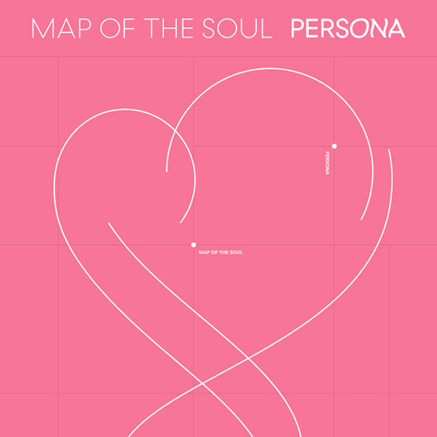
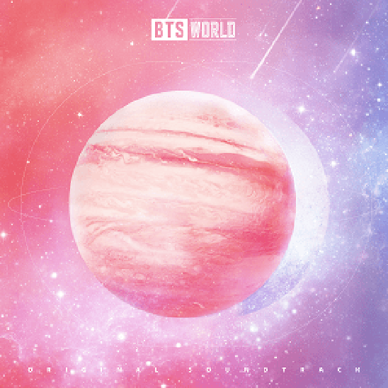

BTS attended the 61st Grammy Awards as award presenters following their appearance at the LA Grammy Museum in 2018. They also received a nomination for Best Recording Package and even though none of these had much to do with their music, fans felt this was a sign the West was finally seeing them as serious artists. Their sixth EP, Map of the Soul: Persona was released in April becoming the best selling album in the US for 2019. They performed lead single “Boy With Luv” on Saturday Night Live as the first Korean act to do so and continued to promote on various American TV shows. Map of the Soul: Persona became their third album within eleven months to top the Billboard 200, a feat last achieved by The Beatles in 1995-96. Their global reach has been so enormous, they often get compared to The Beatles and so they paid homage to them in a themed episode of The Late Show with Stephen Colbert which you can watch below.
In April, Time named BTS in their 100 Most Influential People of 2019 list. It was obvious at this point, BTS is here to stay. Western and Eastern artists alike were eager to collaborate with them knowing anything BTS touched was basically gold on the charts. Industry friend Halsey featured on “Boy With Luv”, and Ed Sheeran and Lauv featured on “Make It Right”. BTS at long last received the mutual respect as artists they deserved. No longer were the boys being mocked for their three dollar chains and knock off clothing, but they were instead being recognized for their talent in music and performance. If their debut selves could see them now they might say “keep going, it’s a dream come true.”
|  | |
|---|---|
| 6th Mini Album | Map of the Soul: Persona |
| Genres | Pop · R&B · Rap rock |
| About | The album opens with an introspective song by RM followed by six cheery and chill tracks about their lives as idols and their love for their fans. |
| Song: Home | |
|  | |
|---|---|
| First Game Soundtrack | BTS World: Original Soundtrack |
| Genres | Pop · R&B |
| About | A soundtrack for their mobile game, BTS World. Because players lead the band members through a number of struggles in fictonal universes, the songs mostly have to do with following your dreams and moving forward. |
| Song: Dream Glow (ft. Charli XCX) | |
At the 34th Golden Disc Awards, BTS became the first artists in history to win grand prizes in both the physical and digital categories in a single year.
Won Top Duo/Group and Top Social Artist at the 26th Billboard Music Awards.
Embarked on their world tour stadium extension, Love Yourself: Speak Yourself held in venues such as Wembley Stadium, Stade de France, Metlife Stadium, Rose Bowl and Soldier Field. They’re the first to Asian act and first non-English speaking artist ever to headline and sell out Wembley Stadium.
Released BTS World, a mobile game where players can go through various storylines with each member. The original soundtrack included collaborations with Charli XCX, Zara Larsson and Juice Wrld.
Released their tenth Japanese single “Lights” making it the first Korean single to achieve a million shipments in Japan.
Performed in Riyadh, becoming the first foreign act to perform a solo concert in Saudi Arabia.
According to Billboard’s year-end Boxscore charts, BTS were the top-grossing touring group of 2019.
Became the first Kpop group to win the Favorite Duo or Group - Pop/Rock at the 2019 American Music Awards and Favourite Social Artist award in 2018 and 2019.
They became the first artists in the history of Kpop to receive all grand prizes at both the MAMAs and MMAs receiving four from each show.
Map of the Soul: Persona was named the second best-selling physical album of 2019 in the US by Nielsen Music only behind Taylor Swift’s Lover.
The International Federation of the Phonographic Industry named BTS as one of the best-selling artists of 2019 for a second year making them the first non-English speaking act to achieve this.